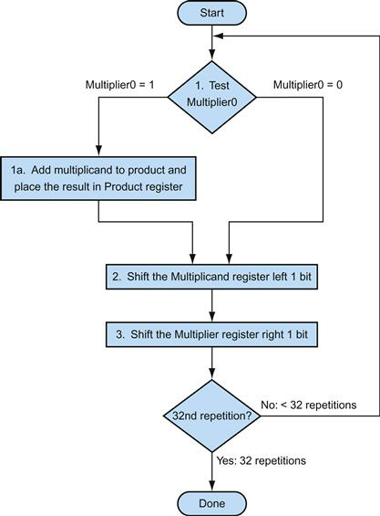
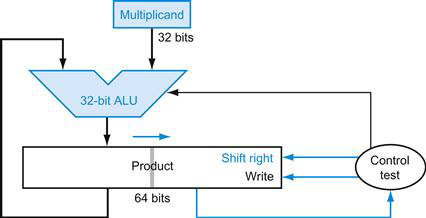
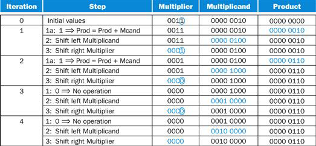
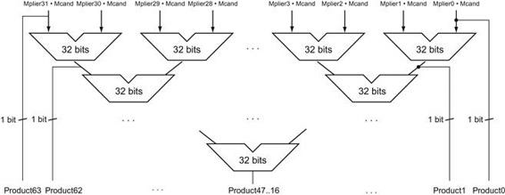
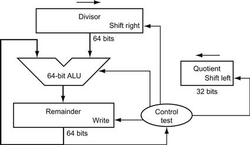
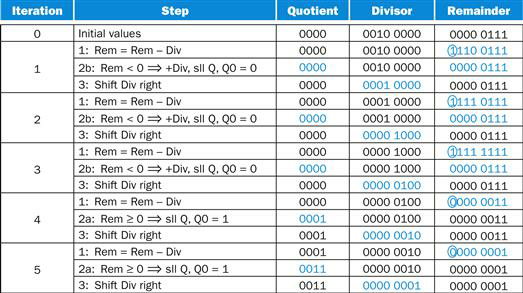
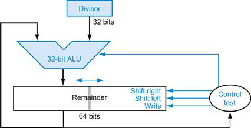
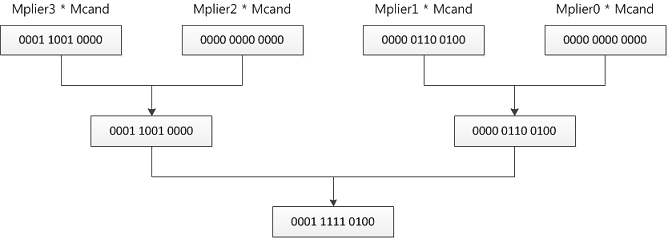

Figures

FIGURE 3.4 The first multiplication algorithm, using the hardware shown in Figure 3.3.
If the least significant bit of the multiplier is 1, add the multiplicand to the product. If not, go to the next step. Shift the multiplicand left and the multiplier right in the next two steps. These three steps are repeated 32 times.

FIGURE 3.5 Refined version of the multiplication hardware.
Compare with the first version in Figure 3.3. The Multiplicand register, ALU, and Multiplier register are all 32 bits wide, with only the Product register left at 64 bits. Now the product is shifted right. The separate Multiplier register also disappeared. The multiplier is placed instead in the right half of the Product register. These changes are highlighted in color. (The Product register should really be 65 bits to hold the carry out of the adder, but it’s shown here as 64 bits to highlight the evolution from Figure 3.3.)

FIGURE 3.6 Multiply example using algorithm in Figure 3.4.
The bit examined to determine the next step is circled in color.

FIGURE 3.7 Fast multiplication hardware.
Rather than use a single 32-bit adder 31 times, this hardware “unrolls the loop” to use 31 adders and then organizes them to minimize delay.

FIGURE 3.8 First version of the division hardware.
The Divisor register, ALU, and Remainder register are all 64 bits wide, with only the Quotient register being 32 bits. The 32-bit divisor starts in the left half of the Divisor register and is shifted right 1 bit each iteration. The remainder is initialized with the dividend. Control decides when to shift the Divisor and Quotient registers and when to write the new value into the Remainder register.

FIGURE 3.10 Division example using the algorithm in Figure 3.9.
The bit examined to determine the next step is circled in color.

FIGURE 3.11 An improved version of the division hardware.
The Divisor register, ALU, and Quotient register are all 32 bits wide, with only the Remainder register left at 64 bits. Compared to Figure 3.8, the ALU and Divisor registers are halved and the remainder is shifted left. This version also combines the Quotient register with the right half of the Remainder register. (As in Figure 3.5, the Remainder register should really be 65 bits to make sure the carry out of the adder is not lost.)
Exercises
Never give in, never give in, never, never, never—in nothing, great or small, large or petty—never give in.Winston Churchill, address at Harrow School, 1941
3.1. [5] <§3.2> What is 5ED4–07A4 when these values represent unsigned 16-bit hexadecimal numbers? The result should be written in hexadecimal. Show your work.
5ED40101 1110 1101 0100
-07A4-0000 0111 1010 0100
57300101 0111 0011 0000
-07A4-0000 0111 1010 0100
57300101 0111 0011 0000
3.2. [5] <§3.2> What is 5ED4–07A4 when these values represent signed 16-bit hexadecimal numbers stored in sign-magnitude format? The result should be written in hexadecimal. Show your work.
5ED40101 1110 1101 0100
-07A4+1111 1000 0101 1100
57300101 0111 0011 0000
-07A4+1111 1000 0101 1100
57300101 0111 0011 0000
3.3. [10] <§3.2> Convert 5ED4 into a binary number. What makes base 16 (hexadecimal) an attractive numbering system for representing values in computers?
5ED4=>0101 1110 1101 0100
Hex is a very useful numerical system. It is the primary representation of memory addresses in computers as modern computers operate at a base of 16, my computer, for example, is 64 bit, so 16*4. This makes representation accurate and easy. In addition it allows large numbers to be displayed in less digits, for example, Hex Dword(32 bits) is written as FFFFFFFF, just 8 digits, but in decimal is represented as 4294967295, 10 digits.
Hex is a very useful numerical system. It is the primary representation of memory addresses in computers as modern computers operate at a base of 16, my computer, for example, is 64 bit, so 16*4. This makes representation accurate and easy. In addition it allows large numbers to be displayed in less digits, for example, Hex Dword(32 bits) is written as FFFFFFFF, just 8 digits, but in decimal is represented as 4294967295, 10 digits.
3.4. [5] <§3.2> What is 4365–3412 when these values represent unsigned 12-bit octal numbers? The result should be written in octal. Show your work.
4365100 011 110 101
-3412-011 100 001 010
0753000 111 101 011
-3412-011 100 001 010
0753000 111 101 011
3.5. [5] <§3.2> What is 4365–3412 when these values represent signed 12-bit octal numbers stored in sign-magnitude format? The result should be written in octal. Show your work.
4365100 011 110 101
-3412+100 011 110 110
0753000 111 101 011
-3412+100 011 110 110
0753000 111 101 011
3.6. [5] <§3.2> Assume 185 and 122 are unsigned 8-bit decimal integers. Calculate 185–122. Is there overflow, underflow, or neither?
1851011 1001
-122-0111 1010
0630011 1111
Since unsigned 8-bit integers range is 0~255, they are all in range.
-122-0111 1010
0630011 1111
Since unsigned 8-bit integers range is 0~255, they are all in range.
3.7. [5] <§3.2> Assume 185 and 122 are signed 8-bit decimal integers stored in sign-magnitude format. Calculate 185+122. Is there overflow, underflow, or neither?
1851011 1001 (-71)
+122+0111 1010
0510011 0011
Since signed 8-bit integers range is -128~127, they are all in range.
+122+0111 1010
0510011 0011
Since signed 8-bit integers range is -128~127, they are all in range.
3.8. [5] <§3.2> Assume 185 and 122 are signed 8-bit decimal integers stored in sign-magnitude format. Calculate 185–122. Is there overflow, underflow, or neither?
1851011 1001 (-71)
-122+1000 0110
-193
Since signed 8-bit integers range is -128~127, there is underflow.
-122+1000 0110
-193
Since signed 8-bit integers range is -128~127, there is underflow.
3.9. [10] <§3.2> Assume 151 and 214 are signed 8-bit decimal integers stored in two’s complement format. Calculate 151+214 using saturating arithmetic. The result should be written in decimal. Show your work.
※ saturating arithmetic : http://en.wikipedia.org/wiki/Saturation_arithmetic
1510110 1001(105)
+214+0010 1010(42)
1270111 1111
Since signed 8-bit integers range is -128~127, the result using saturating arithmetic is 127, not 365.
+214+0010 1010(42)
1270111 1111
Since signed 8-bit integers range is -128~127, the result using saturating arithmetic is 127, not 365.
3.10. [10] <§3.2> Assume 151 and 214 are signed 8-bit decimal integers stored in two’s complement format. Calculate 151–214 using saturating arithmetic. The result should be written in decimal. Show your work.
1510110 1001(105)
-214-0010 1010(42)
0630011 1111
Since signed 8-bit integers range is -128~127, the result using saturating arithmetic is 63.
-214-0010 1010(42)
0630011 1111
Since signed 8-bit integers range is -128~127, the result using saturating arithmetic is 63.
3.11. [10] <§3.2> Assume 151 and 214 are unsigned 8-bit integers. Calculate 151+214 using saturating arithmetic. The result should be written in decimal. Show your work.
1511001 0111
+214+1101 0110
2551111 1111
Since unsigned 8-bit integers range is 0 ~ 255, the result using saturating arithmetic is 255.
+214+1101 0110
2551111 1111
Since unsigned 8-bit integers range is 0 ~ 255, the result using saturating arithmetic is 255.
3.12. [20] <§3.3> Using a table similar to that shown in Figure 3.7, calculate the product of the octal unsigned 6-bit integers 62 and 12 using the hardware described in Figure 3.4. You should show the contents of each register on each step.

062000 110 010
*012*000 001 010
764111 110 100
3.13. [20] <§3.3> Using a table similar to that shown in Figure 3.6, calculate the product of the hexadecimal unsigned 8-bit integers 62 and 12 using the hardware described in Figure 3.5. You should show the contents of each register on each step.
0620000 0110 0010
*012*0000 0001 0010
6E40110 1110 0100
// | is half of 64bits at the "product" header. thus, it is a position of 32-bit.
// the iteration should be executed to 32nd to calculate the product.
*012*0000 0001 0010
6E40110 1110 0100
| Iteration | Step | Multiplier (lower 32bits) | Multiplicand | Product (upper 32bits) |
|---|---|---|---|---|
| 0 | initial values | 0001 0010 | 0000 0110 0010 | 0000 0000 | 0000 0000 |
| 1 | 1: 0 ⇒ No operation 2: Shift left Multiplicand 3: Shift right Product | 0001 0010 0001 0010 0000 1001 | 0000 0110 0010 0000 1100 0100 0000 1100 0100 | 0000 0000 | 0000 0000 0000 0000 | 0000 0000 0000 0000 | 0000 0000 |
| 2 | 1a: 1 ⇒ Prod = Prod+Mcand 2: Shift left Multiplicand 3: Shift right Product | 0000 1001 0000 1001 0000 0100 | 0000 1100 0100 0001 1000 1000 0001 1000 1000 | 0110 0010 | 0000 0000 0110 0010 | 0000 0000 0011 0001 | 0000 0000 |
| 3 | 1: 0 ⇒ No operation 2: Shift left Multiplicand 3: Shift right Product | 0000 0100 0000 0100 0000 0010 | 0001 1000 1000 0011 0001 0000 0011 0001 0000 | 0011 0001 | 0000 0000 0011 0001 | 0000 0000 0001 1000 | 1000 0000 |
| 4 | 1: 0 ⇒ No operation 2: Shift left Multiplicand 3: Shift right Product | 0000 0010 0000 0001 0000 0001 | 0011 0001 0000 0110 0010 0000 0110 0010 0000 | 0001 1000 | 1000 0000 0001 1000 | 1000 0000 0000 1100 | 0100 0000 |
| 5 | 1a: 1 ⇒ Prod = Prod+Mcand 2: Shift left Multiplicand 3: Shift right Product | 0000 0001 0000 0001 0000 0000 | 0110 0010 0000 1100 0100 0000 1100 0100 0000 | 0110 1110 | 0100 0000 0110 1110 | 0100 0000 0011 0111 | 0010 0000 |
// the iteration should be executed to 32nd to calculate the product.
※ Details about Figure 3.5 : http://www.ecs.umass.edu/ece232/slides/lect08-ece232.pdf (8p)
3.14. [10] <§3.3> Calculate the time necessary to perform a multiply using the approach given in Figures 3.4 and 3.5 if an integer is 8 bits wide and each step of the operation takes 4 time units. Assume that in step 1a an addition is always performed—either the multiplicand will be added, or a zero will be. Also assume that the registers have already been initialized (you are just counting how long it takes to do the multiplication loop itself). If this is being done in hardware, the shifts of the multiplicand and multiplier can be done simultaneously. If this is being done in software, they will have to be done one after the other. Solve for each case.
Given a bit width of 8, we know that the multiplicand and multiplier registers will need to be shifted that many times. The process would look similar to the tables simulating multiplication from the previous question.
i.e. one iteration would look like this -
(hardware implementation)
1a - 1 --> Product = product + multiplicand
2 - shift multiplicand left + multiplier right
(software implementation)
1a - 1 --> Product = product + multiplicand
2 - shift multiplicand left
3 - shift multiplier right
and we would need to iterate once for every bit, so 8 times. So for the hardware implementation, 64 time units(8 iterations * 2 operations per iteration * 4tu per operation) would be required.
the software implementation would take 94 time units(8 iterations * 3 operations per iteration * 4tu per operation) would be required.
3.15. [10] <§3.3> Calculate the time necessary to perform a multiply using the approach described in the text (31 adders stacked vertically) if an integer is 8 bits wide and an adder takes 4 time units.
With stacked adders, section 3.3 explains each takes as input, "the multiplicand ANDed with a multiplier bit, and the other is the output of a prior adder." Each bit of the multiplier register is checked before the multiplication so the hardware will know whether the multiplicand is to be added or not at each step. With this approach, the intermediate steps are skipped and we only need to wait on the add times for each bit
our total time would be 32 time units(8 adds * 4tu per instruction)
3.16. [20] <§3.3> Calculate the time necessary to perform a multiply using the approach given in Figure 3.7 if an integer is 8 bits wide and an adder takes 4 time units.
This approach unrolls the loop that 32 adders(or 8 in our case) in a stack, and instead runs them in parallel. Instead of each adder only being used 1/32 of the time, we get much higher utilization, and we only have to wait for a number of operations equal to the log of the total number of adders log(32) = 5. or in the case of a bit width of 8 -
total time = 28 (7 adders * 4tu per instruction)
3.17. [20] <§3.3> As discussed in the text, one possible performance enhancement is to do a shift and add instead of an actual multiplication. Since 9×6, for example, can be written (2×2×2+1)×6, we can calculate 9×6 by shifting 6 to the left 3 times and then adding 6 to that result. Show the best way to calculate (0x33) × (0x55) using shifts and adds/subtracts. Assume both inputs are 8-bit unsigned integers.
0x33 = 51(ten)0x55 = 85(ten)
51x85 can be written (2x2x2x2x2x2+21)x51
51*64=1100 1100 0000 (by shifting 51 to the left 6 times)
51*21= 0100 0010 1111
1100 1100 0000
+ 0100 0010 1111
1 0000 1110 11114335(ten)
51x85 can be written (2x2x2x2x2x2+21)x51
51*64=1100 1100 0000 (by shifting 51 to the left 6 times)
51*21= 0100 0010 1111
1100 1100 0000
+ 0100 0010 1111
1 0000 1110 11114335(ten)
3.18. [20] <§3.4> Using a table similar to that shown in Figure 3.10, calculate 74 divided by 21 using the hardware described in Figure 3.8. You should show the contents of each register on each step. Assume both inputs are unsigned 6-bit integers.
// I assume that 74 and 21 are octal.
| Iteration | Step | Quotient | Divisor | Remainder |
|---|---|---|---|---|
| 0 | initial values | 000000 | 010001 000000 | 000000 111100 |
| 1 | 1: Rem = Rem - Div 2b: Rem < 0 ⇒ +Div, sll Q, Q0=0 3: Shift Div right | 000000 000000 000000 | 010001 000000 010001 000000 001000 100000 | 101111 111100 000000 111100 000000 111100 |
| 2 | 1: Rem = Rem - Div 2b: Rem < 0 ⇒ +Div, sll Q, Q0=0 3: Shift Div right | 000000 000000 000000 | 001000 100000 001000 100000 000100 010000 | 111000 011100 000000 111100 000000 111100 |
| 3 | 1: Rem = Rem - Div 2b: Rem < 0 ⇒ +Div, sll Q, Q0=0 3: Shift Div right | 000000 000000 000000 | 000100 010000 000100 010000 000010 001000 | 111100 101100 000000 111100 000000 111100 |
| 4 | 1: Rem = Rem - Div 2b: Rem < 0 ⇒ +Div, sll Q, Q0=0 3: Shift Div right | 000000 000000 000000 | 000010 001000 000010 001000 000001 000100 | 111110 110100 000000 111100 000000 111100 |
| 5 | 1: Rem = Rem - Div 2b: Rem < 0 ⇒ +Div, sll Q, Q0=0 3: Shift Div right | 000000 000000 000000 | 000001 000100 000001 000100 000000 100010 | 111111 111000 000000 111100 000000 111100 |
| 6 | 1: Rem = Rem - Div 2a: Rem ≥ 0 ⇒ sll Q, Q0=1 3: Shift Div right | 000000 000001 000001 | 000000 100010 000000 100010 000000 010001 | 000000 011010 000000 011010 000000 011010 |
| 7 | 1: Rem = Rem - Div 2a: Rem ≥ 0 ⇒ sll Q, Q0=1 3: Shift Div right | 000001 000011 000011 | 000000 010001 000000 010001 000000 001000 | 000000 001001 000000 001001 000000 001001 |
3.19. [30] <§3.4> Using a table similar to that shown in Figure 3.10, calculate 74 divided by 21 using the hardware described in Figure 3.11. You should show the contents of each register on each step. Assume A and B are unsigned 6-bit integers. This algorithm requires a slightly different approach than that shown in Figure 3.9. You will want to think hard about this, do an experiment or two, or else go to the web to figure out how to make this work correctly. (Hint: one possible solution involves using the fact that Figure 3.11 implies the remainder register can be shifted either direction.)
| Iteration | Step | Divisor | Remainder |
|---|---|---|---|
| 0 | initial values Shift Rem left | 010001 010001 | 000000 111100 000001 111000 |
| 1 | 1: Rem = Rem - Div 2b: Rem < 0 ⇒ +Div, sll R, R0=0 | 010001 010001 | 110000 111000 000011 110000 |
| 2 | 1: Rem = Rem - Div 2b: Rem < 0 ⇒ +Div, sll R, R0=0 | 010001 010001 | 110010 110000 000111 100000 |
| 3 | 1: Rem = Rem - Div 2b: Rem < 0 ⇒ +Div, sll R, R0=0 | 010001 010001 | 110110 100000 001111 000000 |
| 4 | 1: Rem = Rem - Div 2b: Rem < 0 ⇒ +Div, sll R, R0=0 | 010001 010001 | 111110 000000 011110 000000 |
| 5 | 1: Rem = Rem - Div 2a: Rem ≥ 0 ⇒ sll R, R0=1 | 010001 010001 | 001101 000000 011010 000001 |
| 6 | 1: Rem = Rem - Div 2a: Rem ≥ 0 ⇒ sll R, R0=1 | 010001 010001 | 001001 000001 010010 000011 |
| done | Shift left half of Rem right | 010001 | 001001 000011 |
3.20. [5] <§3.5> What decimal number does the bit pattern 0×0C000000 represent if it is a two’s complement integer? An unsigned integer?
two's complement integer:201,326,592
unsigned integer:201.326.592
3.21. [10] <§3.5> If the bit pattern 0×0C000000 is placed into the Instruction Register, what MIPS instruction will be executed?
jal0
3.22. [10] <§3.5> What decimal number does the bit pattern 0×0C000000 represent if it is a floating point number? Use the IEEE 754 standard.
1.0 x 2-103
| 0 | 00011000 | 00000000000000000000000 |
3.23. [10] <§3.5> Write down the binary representation of the decimal number 63.25 assuming the IEEE 754 single precision format.
63.25 = 253 x 2-2 = 1.1111101 x 25
| 0 | 10000100 | 11111010000000000000000 |
3.24. [10] <§3.5> Write down the binary representation of the decimal number 63.25 assuming the IEEE 754 double precision format.
| 0 | 10000000100 | 1111101000000000000000000000000000000000000000000000 |
3.25. [10] <§3.5> Write down the binary representation of the decimal number assuming it was stored using the single precision IBM format (base 16, instead of base 2, with 7 bits of exponent).
| 0 | 1000100 | 111110100000000000000000 |
3.26. [20] <§3.5> Write down the binary bit pattern to represent −1.5625×10−1 assuming a format similar to that employed by the DEC PDP-8 (the leftmost 12 bits are the exponent stored as a two’s complement number, and the rightmost 24 bits are the mantissa stored as a two’s complement number). No hidden 1 is used. Comment on how the range and accuracy of this 36-bit pattern compares to the single and double precision IEEE 754 standards.
| 0111 1111 1100 | 0110 0000 0000 0000 0000 0000 |
References
3.19